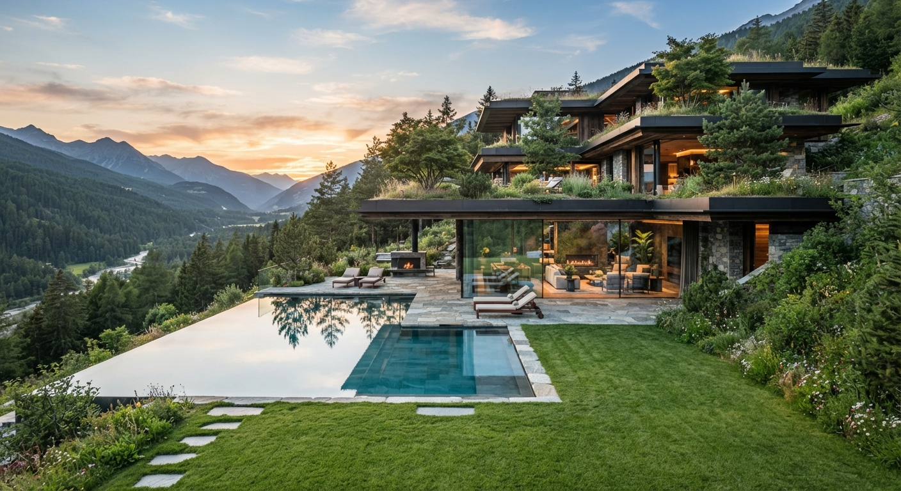

Архітектурна екосистема майбутнього |
Біофільна розкіш |
Еко-урбанізм |
Архітектура майбутнього |
Технологічний зв'язок із природою |
Інженерна досконалість |
Архітектура майбутнього |
|
Уявіть дім, де межі між затишною розкішною вітальнею та дикою природою повністю стираються. Дім, де ви дихаєте на повні груди, відпочиваєте від мегаполіса, але при цьому користуєтеся найсучаснішими технологіями комфорту. Це і є Biophilic High-End Design (біофільний дизайн преміумкласу) — головний архітектурний тренд майбутнього. |
Сучасна вілла або комплекс із мінімалістичним дизайном, великою кількістю скла та терасами, які щедро засаджені живими рослинами, деревами й вертикальними садами. На задньому плані — легкий серпанок, м'яке світло вечірнього сонця і глибокі фіолетово-сині сутінки в небі, що перегукуються з вашою палітрою. |
 |
Позитивні сторони |
Негативні сторони |
Бездоганна інтеграція в ландшафт:будинок не просто стоїть на горі, він стає її продовженням. Багаторівневі тераси з «зеленими дахами» (екстенсивне озеленення) плавно переходять у схил, роблячи споруду менш інвазивною. Вражаючий краєвид та ефект пейзажного басейну (infinity pool):це найсильніша візуальна частина. Басейн з дзеркальною поверхнею, де відбиваються гори та небо, візуально зливається з долиною. Край басейну без видимих бортиків створює відчуття нескінченності. Панорамне скління:Величезні вікна від підлоги до стелі стирають межу між внутрішнім простором та природою. Вітальня фактично стає частиною тераси, а природа «входить» у дім. Екологічні акценти:тепле світло всередині будинку та біля зовнішнього каміна створює затишок у сутінках. Облаштовані зони відпочинку з шезлонгами та вуличним каміном роблять терасу повноцінною вітальнею просто неба. |
Сезонність використання:у холодну пору року (зима в Альпах), відкрита тераса та басейн будуть непридатними для використання без дорогої системи сніготанення, а літня зелень на дахах може перетворитися на брунатний газон. Відсутність приватності:величезні скляні стіни, які відкривають чудовий краєвид, також роблять внутрішні приміщення повністю видимими зовні (у темний час доби, коли горить світло, це стає проблемою). Будинок виглядає відкритим, як вітрина. Відсутність безпеки біля басейну:це найбільш критичний момент. На передньому краю тераси з пейзажним басейном немає жодного захисного огородження чи поручнів. З точки зору реальних будівельних норм (особливо в горах), це вкрай небезпечно, особливо для дітей чи тварин. |
Яку емоцію дає цей простір |
| Це місце викликає комплекс складних, глибоких емоцій, які можна охарактеризувати як стан впевненого спокою та самодостатності, підсилений естетичним захопленням. Це не просто «гарний будинок», це місце сили. |